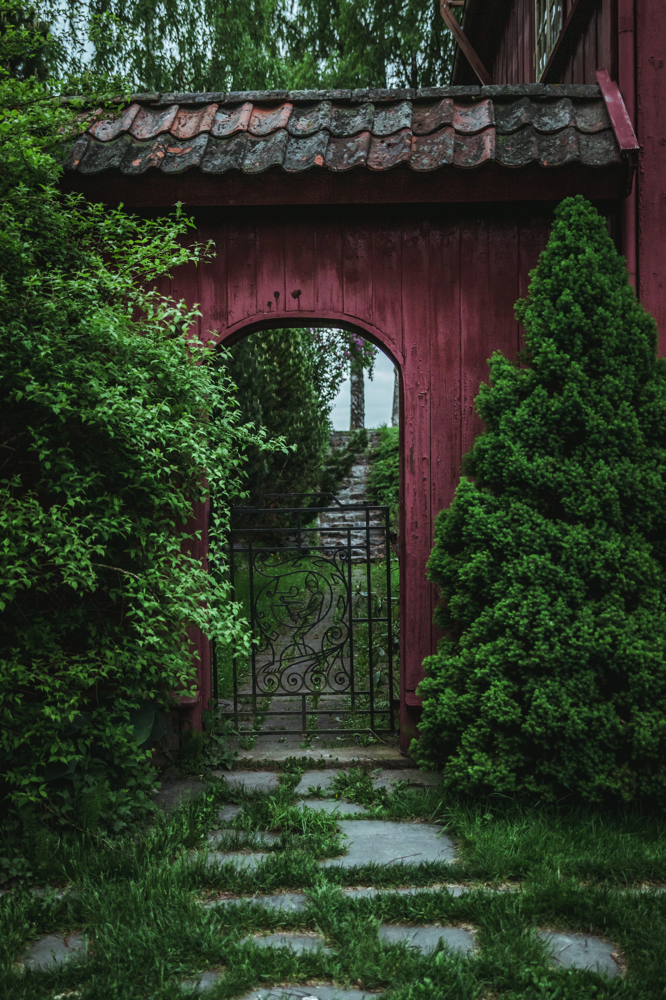

Explore our diverse range of garden projects, each a unique symphony of nature's colors and textures. At Lucky Shrub, we don't just design gardens; we craft personalized green spaces that reflect your vision and lifestyle. From serene backyard retreats to vibrant floral arrangements, our portfolio showcases our commitment to quality, creativity, and sustainability. Let our work inspire your next outdoor project
Projects
